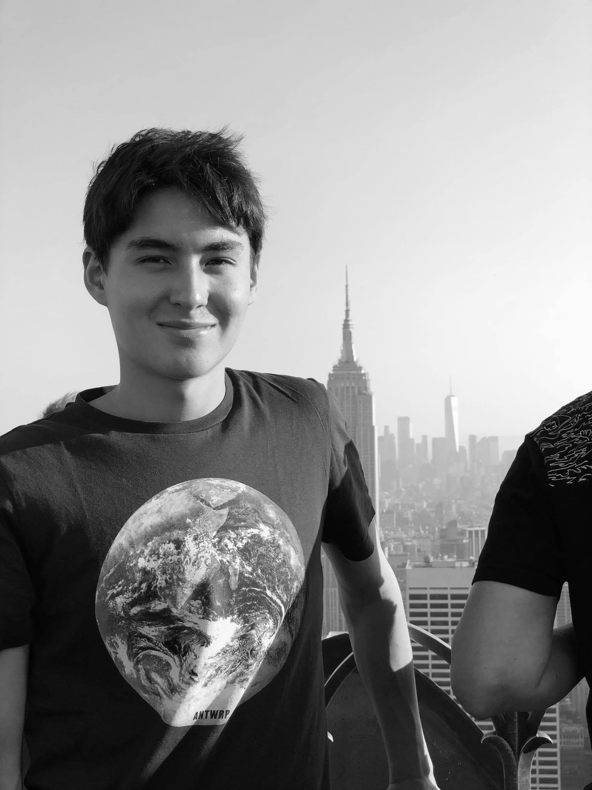

E-portfolio
van Laurens Wissels

CV
- Naam: Laurens Wissels
- Geboortedatum: 24/04/2000
- Woonplaats: Houthalen-Helchteren 3530
- E-mail: Wisselslaurens2000@gmail.com
- Linkedin:https://www.linkedin.com
- Telefoonnummer: +32472091840
- Rijbewijs: Ja
Profiel
Ik ben een 20-jarige student toegepaste informatica aan de hogeschool UCLL. Hier naast heb ik ook 2 jaar informatica aan de KU Leuven gevolgd. Ik ben op zoek naar eerste opportuniteiten om mijn IT carrière te starten en om van bij te leren. Ik ben zeer gemotiveerd om bij te leren en ga graag met mensen om.
Werkervaring
- 2020 - 2021
- Python programmeur
- IMEC, Kapeldreef 75, 3001 Leuven
Als studentenjob python programmeur was ik verantwoordelijk voor het schrijven van een programma dat automatisch een analyse uitvoert op data van de chip afdeling. Het programma genereerde automatisch een rapport in pdf formaat.
- 2020 - 2021
- Robot python programmeur
- IMEC, Kapeldreef 75, 3001 Leuven
Ik was verantwoordelijk voor het programmeren en aansturen van een Opentrons OT-2 lab robot. Dit is een robot die instaat voor het automatisch pipetteren in een laboratorium.
Vaardigheden
- Programmeertalen:
- Python ( Expert )
- Java(Goed)
- Javascript ( Goed )
- Web design; frontend, backend:
- Html
- Css
- Javascript
- Java
- Basis kennins van databanken, SQL
- Vaardig in object gerichte software design
- Kennis van besturingsystemen
- Basis kennis van netwerken
Educatie
- KU Leuven: 2de jaar bachelor informatica afegrond
- UCLL: 1ste bachelor toegepaste informatica
Projecten
Een website voor webontwikkeling1. Hier heb ik de basis van webontwikkeling geleerd. Dit hield html en css in. Ik heb als eindproject een site gemaakt over een goed doel
Een website voor webontwikkeling2. Hier heb ik de geleerd om dynamische websites te maken met java. Ik heb een website gemaakt waarmensen hun bonsai boom kunnen toevoegen
Voor het vak Object Oriented programming moest ik een gok spel maken in groep
Op de Ku Leuven moest ik voor het vak Object gericht programmeren een Mario Bros achtig spel maken. Hier heb ik de programmeer taal Java geleerd.
Scroll naar links (op deskotp houd shift in en scroll)
Competenties
Contact me!
- E-mail: Wisselslaurens2000@gmail.com
- Telefoon: 0472091840
- Linkedin:https://www.linkedin.com